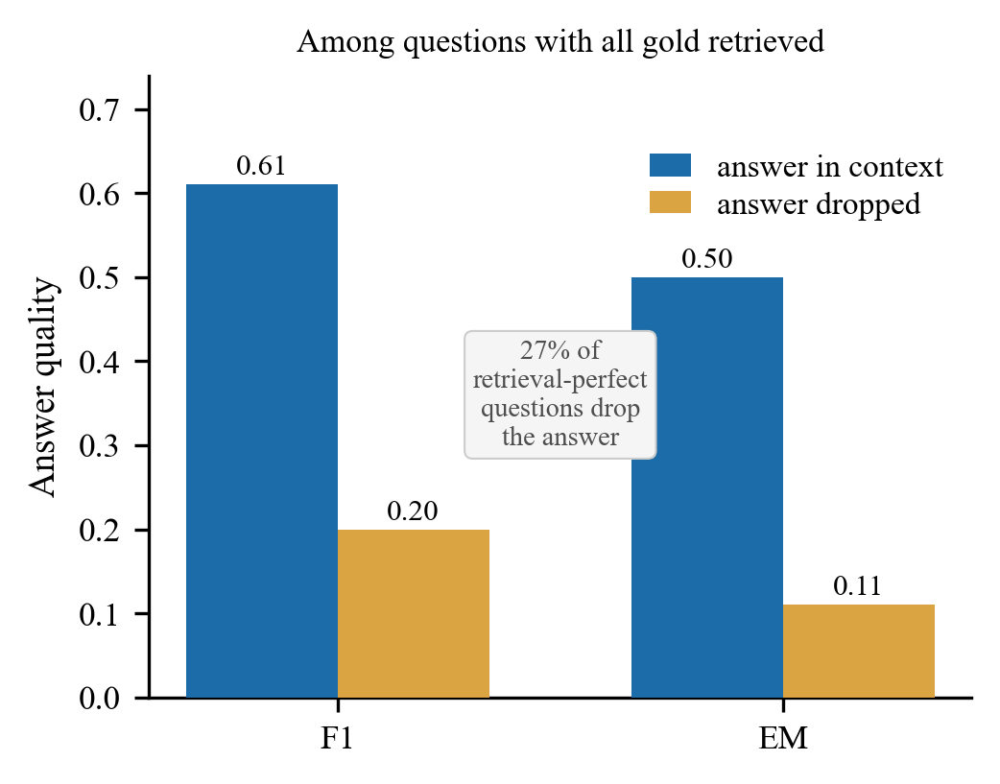
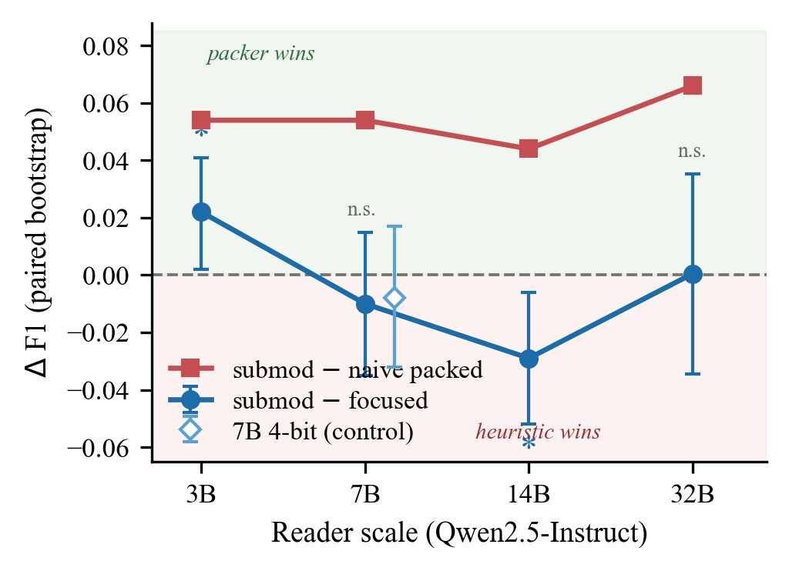

这篇论文适合做检索增强生成（RAG）、需要在有限上下文里决定“放哪些检索结果进去”的工程师读。它的核心思想一句话：大家习惯用召回率（recall@k）评估检索，但模型读的是经过裁剪、拼接后的那段上下文；预算一紧，两者就会脱节，真正该看的是“标准答案有没有出现在模型读到的上下文里”，作者把这个指标叫 answer-in-context。在 HotpotQA 上，即使 5 篇检索结果已经包含全部标准文档，仍有 27% 的题在裁剪时把答案丢掉了，这些题的精确匹配率只有 0.11，答案保住的题是 0.50。作者据此做了一个按这个目标优化的上下文打包器，它稳定胜过常见的“按相关度截断”和 LLMLingua-2 压缩，但和一个手调的启发式规则相比，14 组对比里有 12 组打平。
它解决什么问题？
RAG 的流程是：检索器先找回一批文档，打包器（packer）再从中挑一部分、在 token 预算内拼成上下文，最后交给阅读模型（reader）生成答案。召回率是在第一步之后算的，只看标准文档有没有被检索回来；可模型读到的是第二步的结果。
当检索回来的相关内容比预算能装下的多，打包器就得取舍，召回率和模型实际看到的内容就分开了。多跳问题尤其明显，因为答案需要把几篇文档的信息串起来。举一个示意例子：问题是“电影 X 的导演出生在哪个国家？”。检索回来的 5 篇里，第 1、2 篇都在讲电影 X，第 3 篇讲导演的生平，写着“出生于法国巴黎”。召回率是满分。但如果预算只够放两段，按相关度排序的打包器会留下第 1、2 篇这对重复的内容，把真正含答案的第 3 篇挤掉，模型就答不出来了。
论文用三个多跳问答数据集（HotpotQA、MuSiQue、2WikiMultiHopQA）和两个单跳数据集来研究这个问题。实验设置非常紧：主预算只有 160 个 token，阅读模型主要是 Qwen2.5-3B，两张 T4 显卡就能跑。
指标怎么定义
作者在“打包后、真正交给模型的上下文”上算三个量，和召回率的区别是它们都在裁剪之后算：
| 指标 | 怎么算 | 示意例子里的值 |
|---|---|---|
| answer-in-context | 标准答案（归一化后）是否作为连续片段出现在上下文里，是就记 1 | 第 3 篇被挤掉，记 0 |
| 标准文档覆盖率 | 有多少比例的标准文档至少贡献了一段内容进上下文 | 两篇标准文档只进了一篇，记 0.5 |
| 标准 token 密度 | 上下文里来自标准文档的 token 占多少 | 取决于两段的长度 |
为什么不直接看召回率？因为对抽取式回答来说，答案不在上下文里，模型基本不可能答对；answer-in-context 是答对的必要条件，召回率不是。
对于没有原文片段可对的长篇自由回答，作者还做了一个分级版本：在上下文里取一个宽度为答案长度两倍的窗口，看窗口内能覆盖多少比例的答案 token，取最大值。答案完整出现在上下文里时，窗口能盖住全部答案 token，分数是 1，和二值版本一样；答案只部分出现时，二值版本记 0，分级版本给出覆盖比例，所以对长答案仍有区分度。
这个指标比召回率多告诉了我们什么
在 HotpotQA 上，把所有“打包策略×问题”的组合放在一起算相关性，answer-in-context 和 F1 的相关系数是 0.50，召回率只有 0.31，标准文档覆盖率 0.33。答案在上下文里时平均 F1 是 0.596，不在时只有 0.123。

有人会质疑：这个指标会不会只是召回率换了个说法，或者几乎等于“答对了”？作者做了两层检验。
第一层是增量解释力。只用召回率去拟合 F1，能解释 8.5% 的方差；加上 answer-in-context 后升到 25.7%，多解释了 17 个百分点，说明它带来了召回率没有的信息。另两个多跳数据集上，这个增量更大，分别是 23 和 27 个百分点。answer-in-context 和召回率本身的相关系数只有 0.24 到 0.41，所以它远没到“就是召回率换个说法”的程度。
第二层是两次干预实验。在 2WikiMultiHopQA 上，作者的打包器比启发式规则多放进了标准文档（覆盖率高 0.054），但 answer-in-context 没变（-0.007），F1 也没变（-0.008，不显著）。原因是这类题的答案通常就在启发式已经排第一的那篇里，多放进来的是推理用的桥接文档。反过来，用 LLMLingua-2 按 token 粒度压缩上下文，会把答案片段切碎，answer-in-context 下降 0.243，准确率跟着下降。覆盖率变了而答案在不在没变，质量不动；答案在不在变了，质量跟着变。这说明真正起作用的是答案有没有进上下文。
打包器怎么设计
既然目标是让答案进上下文，作者把“在预算内选哪些片段”写成一个带预算约束的子模最大化问题（子模函数的特点是边际收益递减：已经选得越多，再加一段带来的增量越小）。目标函数是四项加权和：
| 项 | 作用 | 权重 |
|---|---|---|
| 相关度 | 每段各自的相关度分数之和；单段分数由候选生成阶段给出，打包器直接当输入用 | 1.0 |
| 问题词覆盖 | 问题里的不同实词被覆盖了多少，已覆盖的词再出现不加分 | 0.5 |
| 代表性 | 选中的片段能“代表”多少候选内容，设了上限，防止近似重复刷分 | 0.4 |
| 来源多样性 | 每篇文档的相关度总量开平方再求和，鼓励分散到不同文档 | 0.3 |
其中代表性这一项稍复杂：对每个候选片段，算它和已选片段的相似度之和，但封顶在它和全部候选的相似度总和的 0.3 倍，然后对所有候选求和。封顶意味着一个候选被“代表”到一定程度就不再加分，所以反复塞进几段近似重复的片段，不能无限刷高这一项。
求解用标准的按 token 计价的贪心：每一步在不超预算的片段里，挑“边际收益除以 token 数”最大的那段加进来。示意：片段 A 有 40 个 token、能让目标增加 0.4，每 token 0.01；片段 B 有 20 个 token、能增加 0.3，每 token 0.015，所以先选 B。最后再检查一次，如果单独一段最好的片段比整个贪心结果还好，就只返回它。
对照组有四个。朴素打包是按相关度依次拼接直到装满，这是大多数 RAG 流水线的默认做法。MMR（最大边际相关）是经典的去冗余排序。LLMLingua-2 是把同一批候选压缩到同样预算。最强的对照是作者项目里此前效果最好的“聚焦启发式”打包规则。按作者的描述，它逐段贪心地挑片段，首要标准是这一段能补上多少还没覆盖到的问题词，补得一样多时，再优先选来自还没用过的文档的那段；每加入一段后才检查预算，超出就停止并截断末尾。作者对它的定位是：它关心的两件事大致对应目标函数里“问题词覆盖”和“来源多样性”两项，但缺少代表性项、不按长度折算收益、也不在挑选时考虑预算，因此可以看作同一个目标的粗糙手工近似。为了让比较公平，打包器和启发式共用同一批候选片段和同一份单段相关度分数，比较时唯一的变量就是挑选规则。
结果
HotpotQA、预算 160、3B 阅读模型、三个随机种子的平均（论文表 3）：
| 打包策略 | F1 | 精确匹配率 | 实际用的 token |
|---|---|---|---|
| LLMLingua-2 压缩 | 0.326 | 0.233 | 129.6 |
| 朴素打包 | 0.400 | 0.306 | 151.1 |
| MMR | 0.410 | 0.313 | 151.7 |
| 聚焦启发式 | 0.429 | 0.331 | 152.1 |
| 子模打包器 | 0.451 | 0.359 | 145.5 |
| 每题挑最好的策略（上限参考） | 0.601 | 0.487 | 141.5 |
子模打包器在每个种子上都是最好的固定策略，而且用的 token 更少。它比朴素打包高 0.051 F1，比 LLMLingua-2 高 0.125 F1。压缩输得这么多，是因为逐 token 删减会切碎答案片段，即使把朴素打包的预算降到和压缩差不多的 128 个 token，F1 仍有 0.368，高于压缩的 0.326。作者逐题拆解发现，子模打包器相对启发式的收益里，81% 来自 37 道“新把答案放进上下文”的题，原因是它让全部标准文档都进上下文的题从 256 道增加到 289 道。
换成另外两个 3B 模型（Falcon3-3B 和 Phi-3.5-mini），相对朴素打包的优势仍然显著（+0.029 和 +0.048），但相对启发式的优势消失了（-0.004 和 +0.002）。

模型变大后，相对启发式的优势被吸收：大模型能从启发式打包的上下文里自己找出答案，更密的标准内容不再带来准确率。预算也有类似规律，在 96、128、160、224 四个预算里，只有 160 时相对启发式的优势显著；而相对朴素打包，每个预算都显著领先。
局限
第一，相对手调启发式的优势基本站不住。作者自己统计了 14 组对比，只有 1 组显著为正、1 组显著为负，其余 12 组打平。在没有真实效果的情况下，做 14 次检验本来就会有一两次偶然显著，作者也承认这个唯一的正面结果只能算假设，而且这些“打包器在什么条件下更好”的结论是事后从同一批实验里归纳的。
第二，设置和真实部署差距很大。160 个 token 的预算只够放两三段文字，现实中的 RAG 预算通常是几千 token；相关度是词面打分，embedding 模型只用了 bge-small；跨模型家族的检验只在 3B 上做，32B 只跑了一个种子。预算放宽到 224 时，相对启发式的优势已经不显著。
第三，answer-in-context 本身是词面匹配。答案被改写成同义表达时会被判为“不在上下文”，作者也提到 27% 的丢答案题里有一小部分属于这种情况。分级版本缓解了长答案的问题，但仍是词面重叠，不衡量答案是否忠实于来源。
第四，这是单作者工作，所有结论都来自同一条实验流水线，复现时要重建它的候选片段切分和聚焦启发式基线。另外，“每题挑最好的策略”能到 0.60 F1，而最好的固定策略只有 0.45，说明不同题目适合的打包方式差别很大；但子模打包器（表里的 submod）已经在 79% 的题目上是最好或并列最好的策略；剩下那些题目上哪种方式更好，要等看到阅读模型的答题结果才知道，推理时拿不到这个信息，所以作者只把 0.60 当作提升空间的参考，而不是一个能部署的方法。
一个 RAG 团队可以怎么用
- 先加一个诊断：在评测里除了召回率，再记录 answer-in-context，也就是标准答案是否出现在最终交给模型的上下文里。重点看“召回满分但答案被丢”的比例，论文的 HotpotQA 设置下是 27%。
- 如果现在用的是按相关度截断，或者用 LLMLingua 这类压缩来塞预算，换成按片段选择的打包器很可能有稳定收益；论文里这一点在所有阅读模型和预算下都成立。
- 如果已经有一个手调好的“覆盖问题词、分散来源”的启发式，就不必期待子模打包器再带来明显提升。
- 多跳任务里先看检索：MuSiQue 上只有 18% 的题全部标准文档都被检索到，这时任何打包方式都无济于事，应该先上迭代式的多跳检索。
结论与评价
这篇论文最有价值的部分是诊断而不是方法：在预算受限的 RAG 里，召回率不等于模型看到了答案，answer-in-context 能更好地解释最终质量，而且两次干预实验支持它是中间的关键变量。
| 维度 | 评价 |
|---|---|
| 问题重要性 | 中高。上下文预算和检索结果之间的取舍是 RAG 工程里常被忽视的一环 |
| 方法创新性 | 中低。子模贪心是教科书方法，新意在把目标和诊断指标挂钩 |
| 实验证据 | 指标的有效性证据扎实；打包器相对强启发式的优势基本是打平，作者自己也如实报告 |
| 工程成本 | 低。诊断只需字符串匹配，打包器是简单贪心 |
| 是否值得尝试 | 诊断值得马上加；打包器在替换朴素截断或压缩时值得试 |
| 适用场景 | 上下文预算紧、多跳问答、阅读模型较小的 RAG 系统 |
读完这篇，你觉得
夜读鸮记下了，谢谢你的反馈。
点一下即可，无需登录；再点一次撤回。只统计匿名次数，不记录你是谁。
讨论
欢迎补充实验细节、复现经验或不同看法。需 GitHub 登录。
正在加载讨论…